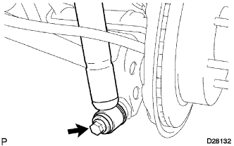

ЗАДНИЙ АМОРТИЗАТОР > УСТАНОВКА |
| 1. ПРЕДВАРИТЕЛЬНО ЗАКРЕПИТЕ ЛЕВЫЙ ЗАДНИЙ АМОРТИЗАТОР В СБОРЕ (для моделей с пневматической подвеской) |
Установите подушку № 2 на левый задний амортизатор в сборе.
  |
Закрепите подушку № 1 и левый задний амортизатор в сборе новой гайкой.
|  |
Предварительно закрепите левый задний амортизатор в сборе с помощью болта.
Подсоедините разъем привода амортизатора.
| 2. ПРЕДВАРИТЕЛЬНО ЗАКРЕПИТЕ ЛЕВЫЙ ЗАДНИЙ АМОРТИЗАТОР В СБОРЕ (для моделей без пневматической подвески) |
Установите подушку № 2 на левый задний амортизатор в сборе.
Предварительно закрепите подушку № 1 и левый задний амортизатор в сборе новой гайкой.
Предварительно закрепите левый задний амортизатор в сборе с помощью болта.
Затяните гайку.
| 3. УСТАНОВИТЕ ЗАДНЕЕ КОЛЕСО |
| 4. ДОБЕЙТЕСЬ УСТОЙЧИВОСТИ ПОДВЕСКИ |
Опустите автомобиль.
Стабилизируйте подвеску, несколько раз покачав автомобиль вверх-вниз.
| 5. ЗАКРЕПИТЕ ЛЕВЫЙ ЗАДНИЙ АМОРТИЗАТОР В СБОРЕ |
Затяните болт.